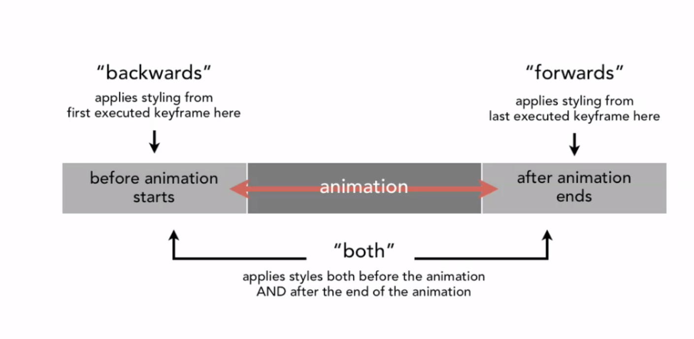

Demos
CSS 3 Animations
CSS 2D Transforms
5/19/14
The transform property has 4 different main functions.
The 4 function
Translate
Translate moves the object
-
translateX(10px)moves the item right 10px -
translateY(10px)moves the item up 10px -
translate(10px, 10px)is shorthand for both
Scale
Increases the size of the object.
-
ScaleX(.5)will shrink the image 50% on the X axis -
ScaleY(2)grows the image 200% on Y axis -
Scale(3)will grow image on both, by 300%
Rotate
Rotates image
-
rotate(150deg)from 0 to 360deg Note the unit is deg
SkewX/Y
-
skewX(-10deg)can be positive, or negative values -
skewY(30deg)Note the unit is deg
transform-origin
Transform is the center by default, but you can move it to other locations of the object including;
- bottom left
- bottom right
- top left
- top right
Example
transform-origin: bottom left;
CSS Animations
5/19/14
CSS Animations are a combination of 2 main parts; Keyframes and animation properties.
Keyframes
Keyframes have a name ('ride' in the following example) in order to be used by the animation property. Keyframes specify the specifics of an animation. (The from and to).
Example
@keyframes ride {
from { transform: translateX(0px); }
to { transform: translateX(450px); }
}
Anything can be there including
- transforms
- background colors
- translates
Animation
The Animation property manages the specific execution of the keyframe property. Answering questions like
- when to start?
- how long to animate?
- what happens when over?
- how many times should it animate?
Example
.square {
animation-name: ride;
animation-duration: 3s;
animation-iteration-count: 1;
animation-direction: alternate;
animation-delay: 1s;
}
List of animation properties
animation-name Specifies the name of the keyframe you want to bind to the selector animation-duration Specifies how many seconds or milliseconds an animation takes to complete animation-timing-function Specifies the speed curve of the animation animation-delay Specifies a delay before the animation will start animation-iteration-count Specifies how many times an animation should be played animation-direction Specifies whether or not the animation should play in reverse on alternate cycles animation-fill-mode Specifies what values are applied by the animation outside the time it is executing animation-play-state Specifies whether the animation is running or paused
Prefixes
Until further notice, we need to use browser prefixes
-webkit-animation
-moz-animation
-o-animation
animation
Ruby file join
5/18/14
$LOAD_PATH << File.join(File.dirname(__FILE__), "..", "app", "controllers")
require "quotes_controller"
$LOAD_PATH shows all the paths that are loaded into current environment.
We're pushing the file
File.join() is used to mash files together.
File.dirname tells current directory of script being run.
We are starting with the load path ($LOAD_PATH) and adding something to it with << File.join. We start with current location File.dirname(__FILE__) and navigate there with known, absolute paths ('..', 'app', 'controllers'). Once our load path has a new path on it, we can require the files inside the added directory with require 'quotes_controller'.
user interface
5/17/14
- lists
- grids
- hero images
- headlines
- buttons
- sections
- content
- backgrounds
- navigation
user experience
5/17/14
- loading
- scrolling
- navigating
- showing
- hiding
- active state
- inactive state
- tabbing
- alerting
types of learning
5/17/14
informative
learning to get a broad understanding. Learning to keep sharp, but doesn't have a direct application
solution
working on task and encounter a problem. In finding a solution, you leanr something new in the process.
practice
simply applying existing knowledge will permit me to get better, more creative, and learn a new approach
exploration
knowing how something works, and trying to find a new way to apply current knowledge
application
taking what i've learned up to this point and applying it.
CSS Animations
5/16/14
Q - how do I add an argument to a coffee class? #coffee
animation fill mode
- none
- forwards #### fill mode 